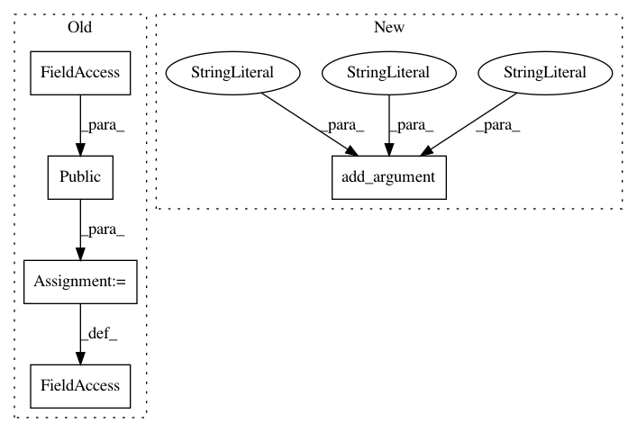

29db4abdbeb839340ac5b0caf934ebda93892934,cnvlib/commands.py,,,#,999
Before Change
// metrics ---------------------------------------------------------------------
do_metrics = public(metrics.do_metrics)
def _cmd_metrics(args):
Compute coverage deviations and other metrics for self-evaluation.
After Change
P_gainloss.add_argument("-t", "--threshold", type=float, default=0.2,
help=Copy number change threshold to report a gene gain/loss.
[Default: %(default)s])
P_gainloss.add_argument("-m", "--min-probes", type=int, default=3,
help=Minimum number of covered probes to report a gain/loss.
[Default: %(default)d])
P_gainloss.add_argument("--drop-low-coverage", action="store_true",
help=Drop very-low-coverage bins before segmentation to avoid
false-positive deletions in poor-quality tumor samples.)
P_gainloss.add_argument("-y", "--male-reference", action="store_true",
In pattern: SUPERPATTERN
Frequency: 3
Non-data size: 5
Instances
Project Name: etal/cnvkit
Commit Name: 29db4abdbeb839340ac5b0caf934ebda93892934
Time: 2017-02-24
Author: eric.talevich@gmail.com
File Name: cnvlib/commands.py
Class Name:
Method Name:
Project Name: etal/cnvkit
Commit Name: 29db4abdbeb839340ac5b0caf934ebda93892934
Time: 2017-02-24
Author: eric.talevich@gmail.com
File Name: cnvlib/commands.py
Class Name:
Method Name:
Project Name: etal/cnvkit
Commit Name: 29db4abdbeb839340ac5b0caf934ebda93892934
Time: 2017-02-24
Author: eric.talevich@gmail.com
File Name: cnvlib/commands.py
Class Name:
Method Name: